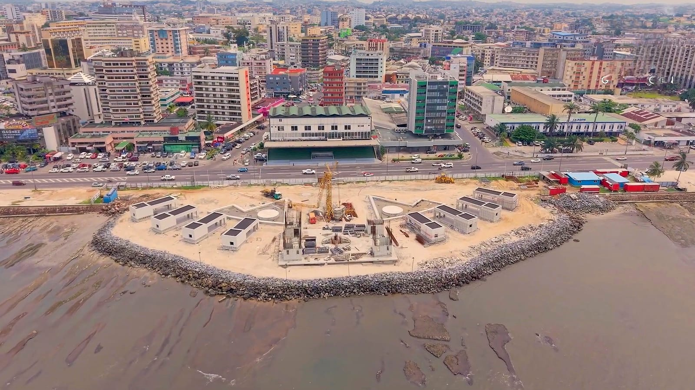
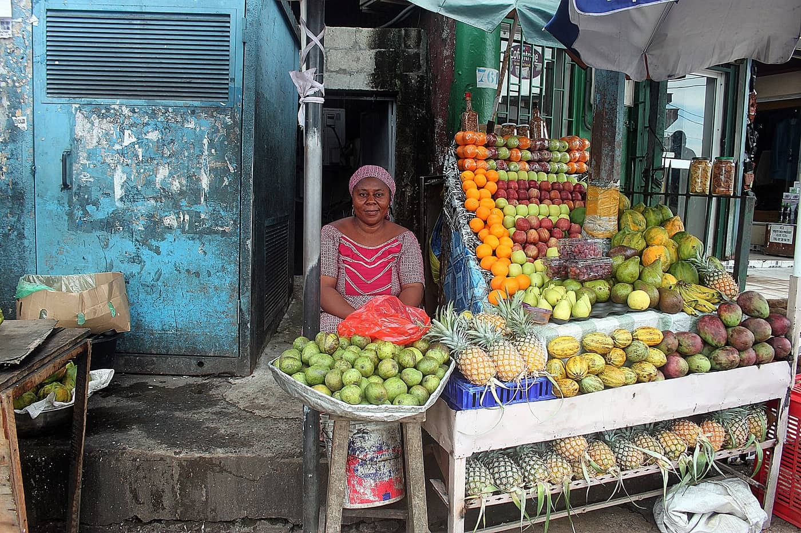
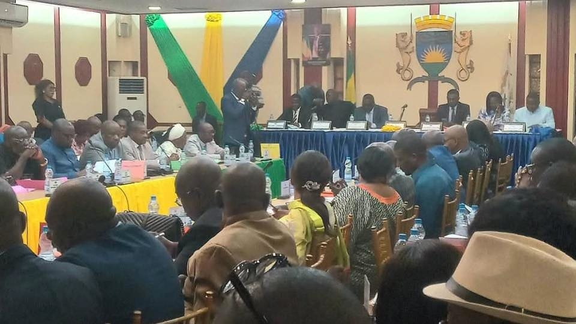

Accueil › La Mairie
Mairie du 3e arrondissementLa mairie du 3e arrondissement est l'une des mairies d'arrondissement de la commune de Libreville, capitale du Gabon, sous la coordination de la mairie centrale. Elle assure l'état civil, la salubrité, le domaine public et le lien avec les quartiers.
Franck Ibouili a été élu maire du 3e arrondissement par le conseil d'arrondissement après les élections du 9 novembre 2025, puis installé officiellement le 19 novembre 2025 par le maire de Libreville de l'époque, Pierre Matthieu Obame Etoughe, avec ses deux adjoints.
Un maire et deux adjoints, installés le 19 novembre 2025. La liste des conseillers d'arrondissement, du secrétaire général et des chefs de quartier n'est pas publiée à confirmer
Sources : Gabon Infos Live (25 novembre 2025), ministère de l'Intérieur. Délégations des adjoints à compléter avec l'arrêté officiel du maire.
Le maire de Libreville coordonne les mairies d'arrondissement et le conseil municipal vote le budget communal, dont la dotation de chaque arrondissement.
Eugène Mba, élu maire de Libreville le 23 avril 2026 et installé le 24 avril (Gabon Quotidien).
Organigramme simplifié : le détail des services du 3e n'est pas publié, il sera complété avec la mairie.
L'arrondissement abrite le grand marché de Mont-Bouët, principal marché de la capitale, ainsi que les quartiers de Petit-Paris et d'Akébé. Les dossiers de 2026 portent sur la salubrité des marchés, le curage des canaux, le chantier du Grand marché de la Peyrie et l'arrivée de nouveaux équipements de santé à Akébé.


e-Tax, état civil numérique, vignettes QR : la commune de Libreville a ouvert plusieurs chantiers numériques. Ce site les relie en une porte d'entrée pour l'habitant du 3e et un back-office pour les agents. Démonstration : données fictives.
Pour la commune, de mi-janvier à mi-juin 2026, selon la mairie centrale.
Lancées le 28 mai 2026 avec Moov Africa Gabon Télécom.
Démarré au marché de Mont-Bouët le 12 juin 2026.
Sources : Gabonclic (juin 2026), Gabonreview (mai 2026), Gabon Media Time (avril 2026).